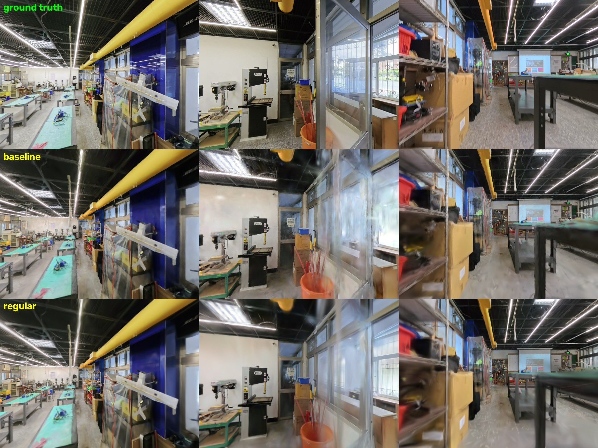
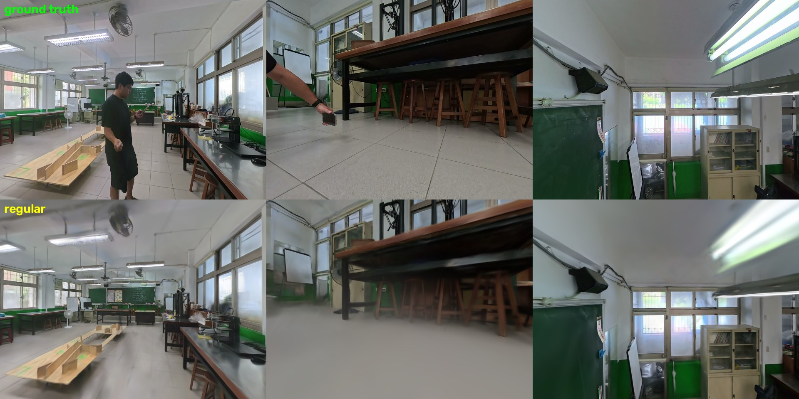

各向異性門檻正則化
把針狀高斯降到 0.02%，而畫質不降反升
既有的 de-needle 是事後夾針。這個實驗問的是：能不能在訓練階段就不要長出針狀高斯？ 在 Colab A100 上以同一份 lt4 COLMAP 資料（726 張／694 已註冊／115,825 稀疏點）做控制對照，唯一變因是正則化。
一、先更正一個我自己犯的量測錯誤
「針狀比例」不能用
高斯有三個軸。
兩者差距巨大：同一個模型
max/min 量。高斯有三個軸。
max/min 很大的可能是扁平圓盤（兩長一短）——但扁平高斯在 3DGS 是正常且必要的，它們正是用來貼合表面的。
真正的病理「針狀」是一長兩短，對應 max/median。兩者差距巨大：同一個模型
max/min>10 是 62%，max/median>10 只有 0.1%。| 模型 | 真·針狀 max/median>10 | 舊誤用 max/min>10 |
|---|---|---|
| Insta360 lt4 官方輸出 | 4.0% | 45.2% |
| Insta360 場景2 官方輸出 | 2.3% | 48.3% |
| 本實驗 基線 | 12.6% | 61.1% |
| 本實驗 各向異性正則 | 0.1% | 62.1% |
這個錯誤一度讓我誤判正則化失敗——因為我懲罰的是
max/median，評分卻用 max/min，
於是看到「針狀 62%，毫無改善」。損失函數與評估指標必須量同一件事，否則成功會長得像失敗。
本頁保留舊欄位，是為了讓這個對照可被檢驗。二、關鍵洞察：scale_reg 管不到形狀
第一輪我沿用 gsplat 官方 MCMC 設定的 opacity_reg + scale_reg，結果 PSNR 從 20.11 崩到 13.45、異性 p95 反而爆到 920 萬。查文獻後才理解原因：
scale_reg 懲罰的是「尺度大小」，針狀問題是「長短軸比例」——兩者正交。
所以整體縮小了，極端細長的反而沒被約束。Effective Rank Analysis（NeurIPS 2024）指出針狀高斯尺度比約 20:1 以上，只覆蓋極小表面卻產生尖刺假影； Robust and Efficient 3DGS 則提出比例約束——限制最大軸與中位軸之比，超過門檻才罰，接近球形的完全不受影響。
依此加入一項直接對應指標的損失：
aniso = scales.max(1) / scales.median(1) loss += ANISO_REG * relu(aniso - 10).mean() # ANISO_REG = 0.1
三、控制對照結果
同資料、同 15,000 iterations、同全解析度 1200×900、同 L1+0.2·(1−SSIM) 損失與 lr 衰減。唯一變因是正則化。
| 指標 | 基線 | 各向異性正則 | 變化 |
|---|---|---|---|
| 真·針狀 >10 | 12.6% | 0.1% | ↓ 126 倍 |
| PSNR | 20.05 | 20.35 | ↑ 0.30 dB（不降反升） |
| 針狀中位數 | 3.44 | 3.14 | 幾乎不變（門檻式懲罰的預期行為） |
| 高斯數 | 2,097,145 | 800,000 | MCMC cap 限制 |
| 訓練時間 | 12.8 分 | 12.5 分 | 無額外成本 |
中位數幾乎不變、而 >10 的尾巴被清空——這正是門檻式懲罰的設計目標：
低於門檻的完全不動，只把病理尾巴壓平。所以畫質沒有被犧牲。

四、第二輪：換更高解析度素材，同場景對打 Insta360 官方
上一輪用的是 lt4 的 colmap-1200。改用家政／生科教室的 colmap-1600（840 張 1600×1200、837 已註冊、198,815 稀疏點，比前者多 72%），
並把高斯上限設為 1,000,000——刻意對齊 Insta360 官方輸出的數量，避免「用更多高斯所以贏」的爭議。
| 指標 | lt4 colmap-1200 15k iters | homeec colmap-1600 20k iters |
|---|---|---|
| PSNR | 20.35 | 22.72 |
| 真·針狀 >10 | 0.1% | 0.02% |
| 針狀 p95 | — | 9.1 |
| 針狀中位數 | 3.14 | 3.55 |
| 高斯數 | 800,000 | 1,000,000 |
| 訓練時間 | 12.5 分 | 27.4 分 |
p95 = 9.1，剛好貼著門檻 10 以下——門檻式懲罰把病理尾巴壓得乾淨，而中位數（3.55）幾乎沒動。這是它有效而不傷畫質的直接證據。

同場景、同量級對照
| Insta360 官方 | 本實驗 | |
|---|---|---|
| 場景 | 同一間（家政／生科教室） | |
| 高斯數 | 1,000,000 | 1,000,000 |
| 真·針狀 >10 | 2.3% | 0.02%（少 100 倍） |
PSNR 無法直接比較（官方未公開其驗證集切分），故只比可共同量測的針狀指標。
順帶驗證了一個硬體問題。同一台 Insta360 X5、同一批原始素材，
只是把訓練視角從 1200 抽到 1600，PSNR 就從 20.35 升到 22.72。
而 X5 原檔是雙魚眼各 3840×3840——1600 只用掉單顆魚眼約 13% 的像素。
換言之，抽取解析度才是當前瓶頸，不是相機規格。
五、誠實評估：還沒贏過 Insta360 官方
針狀指標上本實驗（0.02–0.1%）優於 Insta360 官方（2.3–4.0%），但整體銳利度官方仍明顯較好。
原因很清楚：本實驗最多只跑 20k iterations、訓練視角只抽到 1600（來源是 3840），且沒有官方那套完整的密集化排程。
本頁主張的是「各向異性門檻正則有效且免費」這個單一結論，不是「這個模型比官方好」。
六、過程中踩到的四個坑（都已驗證）
- 正則化方向錯：
scale_reg管不到形狀 → 需形狀專屬項（見第二節）。 - Colab A100 session 約 1 小時上限：實測
KEEP: started到session_terminated為 60 分 12 秒， 期間無任何 keep-alive 錯誤（非設定問題）。一次完整訓練因此連同 VM 一起消失。 → 長訓練必須切成 <45 分鐘段落，且每段跑完立刻取回結果。 colab exec佔用 Jupyter kernel：訓練跑前景時連狀態查詢都會被排隊卡住 → 訓練要nohup丟 VM 背景。- 大檔上傳失敗：
colab upload傳 234 MB 直接 500 → 切 20 MB 塊上傳再遠端合併（實測 9 MB/s）。 另外 macOStar會夾帶._*resource fork（726 張變 1452），遠端要清。
七、gsplat 自寫訓練器的正確設定
官方 examples/ 的依賴（fused-ssim、pycolmap）在 Colab 建置失敗，故自寫 SSIM 與 COLMAP 二進位讀取器繞過。以下為對照官方 simple_trainer.py 校正後的設定：
| 項目 | 正確值 | 踩過的錯 |
|---|---|---|
| means lr | 1.6e-4，ExponentialLR 衰減到 1% | 固定 lr → MCMC 雜訊注入正比於 lr，必發散 |
| MCMC 初始化 | init_opa=0.5、init_scale=0.1×kNN | 用 DefaultStrategy 的 0.1／1.0 → 高斯起始大 10 倍 |
| SH 升階 | 每 1000 步一階 | 每 7500 步 → 顏色能力上得太慢 |
| 損失 | lerp(l1, 1−ssim, 0.2) | — |
| API 陷阱 | MCMCStrategy.initialize_state() 無 scene_scale；DefaultStrategy 才有，且 post_backward 吃 packed | |
資料來源：
相關：Insta360 場景庫 · 閉合對位 v2 · 四台攝影機 × YOLO26-depth
/Volumes/3D/x5-3dgs/workshop-livingtech4b/colmap-1200（外接碟）｜
結果：~/3d/colab-jobs/results/｜訓練器：自寫，繞過 gsplat examples 依賴相關：Insta360 場景庫 · 閉合對位 v2 · 四台攝影機 × YOLO26-depth